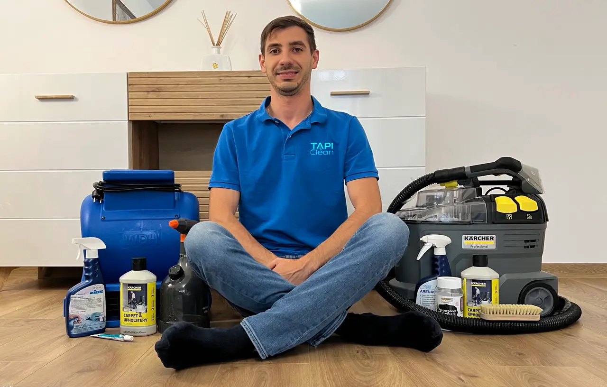

Despre TapiClean
Curățare profesională a tapițeriilor, la tine acasă. Pun accent pe lucru corect, comunicare sinceră și rezultate de care să fiți mulțumiți.
Salut sunt Artur
Am creat TapiClean ca să aduc în Brașov și împrejurimi servicii de curățare a tapițeriei la standarde profesionale. Fie că vorbim despre o canapea, un fotoliu sau o saltea, tratez fiecare lucrare cu aceeași grijă și atenție pe care le-aș oferi propriilor mele lucruri.
Meseria am învățat-o de la oameni care fac asta de mulți ani, cu rezultate excelente și respect pentru fiecare material. Am investit mult timp, pasiune și muncă în acest domeniu, ca să pot livra constant lucrări curate, sigure și bine făcute - nu doar curățat la suprafață.
Misiunea mea e simplă: să redau tapițeriei tale un aspect curat, proaspăt și îngrijit, folosind produse și echipamente de calitate. Iar când alegi TapiClean, alegi un serviciu făcut cu responsabilitate, respect și dorința reală de a lăsa în urmă un rezultat de care să fii mulțumit.

Ce primești când lucrezi cu mine
Nu doar o curățare, ci un proces complet și controlat.
1) Evaluare realistă
Îți spun înainte ce se poate scoate și ce riscuri există la pete vechi / materiale sensibile.
2) Proces în pași
Test, pre-tratare, curățare în profunzime, extracție și uniformizare finală.
3) Respect pentru locuință
Lucru curat, grijă la spațiu și recomandări clare pentru uscare și întreținere.
Zonă acoperită
Serviciul este la domiciliul clientului.
Brașov
cartierele din oraș
Împrejurimi
Sânpetru, Ghimbav, Cristian, Hărman etc.
Programări
în funcție de disponibilitate